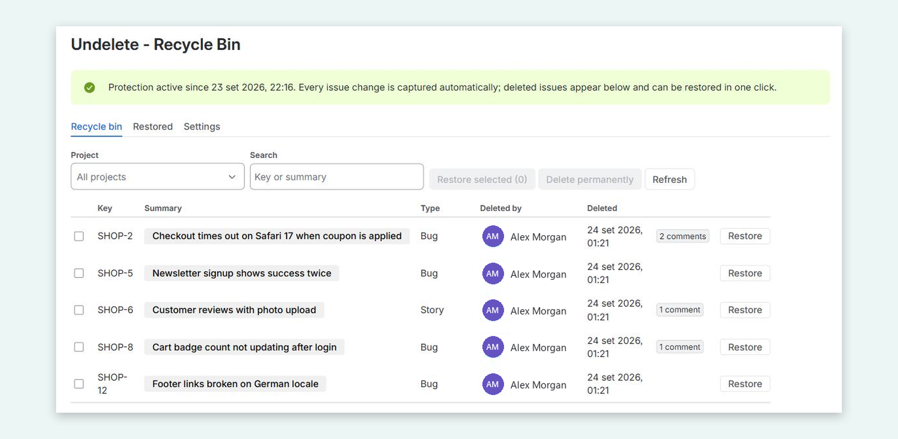

Get it on the Atlassian Marketplace
Lost a work item already? Read how to restore a deleted work item in Jira Cloud (what you can still recover without any app). Questions? See the FAQ.
At a glance: what to know before you rely on it
- Only deletions made after you install Undelete can be restored. Jira keeps no copy of a deleted work item, so no app can bring back one deleted before it was installed.
- A restored work item gets a new key (Jira never reuses keys). The Restored tab shows the old and new keys, and a comment on the restored work item names the original key.
- Attachment files up to 50 MB come back with the work item. Bigger files, and files deleted before their backup finished, can't be restored; their names are listed on the restored work item.
- Restored comments and worklogs show Undelete as their author (Jira doesn't let apps post as someone else). Each one starts with a line naming the original author and date.
- Watchers, votes, change history and board rank can't be re-created. The status is restored, through several transitions when the workflow needs them.
- Restoring doesn't email the assignee or the reporter: they are added back at the end, silently. Jira Automation rules still run, and a notification scheme that emails other people (a group, the project lead) about new work items still does.
- Free for sites with up to 10 users; larger sites have a 30-day free trial, then a per-user subscription billed by Atlassian. If the subscription ends, deletions are still recorded, but restoring is paused until it is active again.
Getting started
- Install Undelete from the Atlassian Marketplace. There is nothing to configure.
- Protection starts immediately for work items created or changed from now on. A first scan copies all existing work items in the background and backs up their attachment files; the status banner shows its progress. A work item deleted before the scan reached it is still listed, with basic data only.
- Open Jira Settings (⚙) → Apps → Undelete - Recycle Bin. You need to be a Jira administrator.
Restoring a deleted work item
- Open the Recycle bin tab. Filter by project, by who deleted and by the days of the deletion, or search by key or words from the summary, in any combination. The filters cover the whole recycle bin; a sub-task is also found by its parent's key, and a key also finds summaries that mention it.
- Click a work item's summary to preview it: fields, description, comments, worklogs, links and attachments.
- Click Restore, or tick several work items and click Restore selected. Choose what comes back with them: comments, worklogs, links, attachment files and the sub-tasks deleted with them (all ticked by default; worklogs follow the setting). Restores run in the background; you can leave the page.
- Restored work items appear in the Restored tab with the original key, the new key, who restored them and notes on anything that couldn't be restored.
What is restored: summary, description, work type, status (through several transitions if the workflow needs them), labels, priority, assignee, reporter, components, versions, due date, sprint (if still open), team, custom fields available on the create screen, estimates, comments (naming the original author and date, with their visibility), worklogs (optional), links, epic/parent, sub-tasks, attachment files (up to 50 MB each) and, on Jira Service Management, the request type. Restoring a parent also restores the sub-tasks that were deleted with it (unless you untick them); restoring an epic links its child work items to it again. Whatever you untick in the restore dialog is not re-created and can't be added later; unticked sub-tasks stay in the recycle bin.
What can't be restored
- The original key. Jira assigns a new key; the original key is recorded in a comment on the restored work item, so searching Jira for
text ~ "PROJ-123"finds it. Links to the old key (in Confluence, chat or email) don't redirect. - Attachment files larger than 50 MB, or files that had not been backed up yet when the work item was deleted. Their names are listed on the restored work item.
- Inline images at their original place. Backed-up images come back as attachments; the text shows a marker where they were embedded.
- The original author on comments and worklogs. Jira's API doesn't let an app choose the author of a comment or worklog, so Jira shows Undelete as the author; the original author and date are written at the top of each one. Time reports therefore count restored worklogs under Undelete (untick "Worklogs" when restoring, or turn off "Restore worklogs" in Settings, if you prefer).
- The original created date. It is written in the restore comment.
- Field values Jira refuses on creation (e.g. archived versions, deactivated users). These are listed in the restore notes.
- Work items deleted before Undelete was installed.
- Watchers, votes, change history and board rank (Jira doesn't allow apps to re-create them).
- Work items hidden from the app by an issue security level are not captured.
- Deleting a whole project is handled by Jira's own project trash (restorable for 60 days in Jira itself).
Good to know: edits made seconds before a deletion are kept, because the latest summary, status and type are taken from the deletion itself. A sub-task can only be restored together with (or after) its parent; if the parent is gone for good, the sub-task is restored as a Task.
Notifications and automation
A restore is quiet. The work item is re-created without assignee and with Undelete as reporter; its comments, worklogs, links, files and status are added; then the assignee and the reporter (on Jira Service Management also the customer, request participants and organizations) are set back, without notification. So nobody gets an email for every old comment, and the original reporter isn't told about a "new" work item. Undelete never re-sends @mentions. Two things Undelete can't switch off: Jira Automation rules that react to new work items, comments or transitions run as usual, and if your notification scheme emails other people about new work items (a group, the project lead), Jira still does. If a project doesn't allow unassigned work items, its default assignee is used until the original one is set back. If the original status doesn't allow any change (some workflows lock their final "Closed" status), the assignee and reporter are set just before the last transition instead, so Jira may notify them of that one step; the restore notes say so.
Restoring a deleted comment, worklog or attachment
Jira has no undo for a deleted comment, worklog or attachment either. Undelete keeps them too.
- Open the Comments, worklogs & files tab. Each row shows the work item, the text (or logged time, or file name), the author, who deleted it and when.
- Click the text to read the full comment, then Restore, or tick several rows and click Restore selected.
- The item is added back to the work item. Comments and worklogs get a line naming the original author and date. Comment visibility (role/group restrictions, and internal vs. customer-visible on Jira Service Management) is kept; worklogs keep their original date and time spent.
If the work item itself was deleted since, restore it from the Recycle bin first; the comment then goes to the restored copy. Deleted attachments are listed only if their file had been backed up.
Exporting the deletion log
For an audit, or to keep a record: on the Recycle bin tab, set the filters you want (project, who deleted, days, words) and click Export CSV. Choose deleted work items and/or deleted comments, worklogs and files, and whether to include items restored since; then download the file and open it in Excel, Google Sheets or Numbers. Each row says what was deleted, by whom and when (UTC), and, if it was restored, the new key, who restored it and when. The file is made in your browser and isn't stored by Undelete. On a project page the export covers that project only.
Project administrators
A Jira administrator can turn on Let project administrators restore their own project's deleted items in Settings. Project administrators then find Undelete - Recycle Bin under Project settings → Apps, showing only that project's deleted work items, comments, worklogs and files. They can preview and restore; permanent deletion and settings stay with Jira administrators.
Who deleted what
The Who deleted what tab counts, per person, the work items, comments, worklogs and files deleted in the last 7, 30 or 90 days (restored items included). On the project page it covers that project only. Deletions made by a Jira Automation rule show the rule's actor.
Settings
- Projects NOT protected: deletions in these projects are not recorded. Saving erases the copies kept of their work items; what is already in the recycle bin stays.
- Keep deleted items for (days): from 7 to 3650 (default 365). A daily cleanup erases older deleted items for good, so lowering the number erases them at the next cleanup.
- Let project administrators restore their own project's deleted items: off by default (see above).
- Back up attachment files: on by default. Files up to 50 MB are copied to Atlassian-hosted storage when they are attached; existing files are copied by the first scan (or by "Re-scan all work items now" if you turn backup on later).
- Restore worklogs by default: whether "Worklogs" is ticked when the restore dialog opens (you can change it for each restore). Turn it off if logged time should normally not be re-created.
- Re-scan all work items now: captures any work item that is not protected yet (normally not needed).
Deleting permanently
Tick items and click Delete permanently to erase their stored copies (including file copies) immediately, for example to honour a data-deletion request. Sub-tasks deleted together with a work item are erased with it. This can't be undone.
Security and data
Undelete is built on Atlassian Forge and runs on Atlassian: all data, including attachment file copies, stays in Atlassian's cloud, with no external servers. Only Jira administrators, and project administrators for their own projects if a Jira administrator allows it, can view or restore deleted items. Uninstalling the app erases its stored data. See the privacy policy.
Limits
Undelete runs on Atlassian Forge and is subject to Forge platform quotas and Jira rate limits. Very large work items (thousands of comments) keep their most recent comments and worklogs. Changes to links may take a few minutes to be captured. Undelete keeps the latest version of each work item, not a history of edits: it brings back deleted things, it doesn't undo changes.
Support
Email support@occoy.com. Support hours: Monday to Friday, 9:00 to 18:00 Italian time.